地政学
ベルモパンはカリブ海沿岸から内陸へ首都機能を移した都市です。メキシコ、グアテマラ、カリブ海、英連邦、台湾、米国との関係が政治を支えます。小国の首都として、災害安全保障と国境外交を同時に背負います。
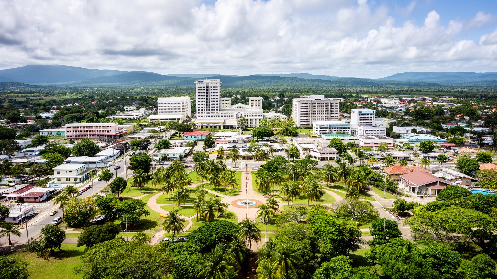
🇧🇿 ベリーズ / 首都 / World City Atlas
カリブ海岸の旧首都がハリケーン被害を受けた後、内陸に築かれた計画首都です。小さな官庁街、住宅地区、学校、農産物市場、川と森、周辺のマヤ遺跡観光が、ベリーズ国家の安全と日常を結びます。
都市の骨格
ベルモパンは、海岸の大都市を置き換える巨大首都ではありません。官庁、国会、学校、住宅、市場、バスターミナル、川沿いの緑を近い距離で組み合わせ、低地海岸とは違う安全な国家中枢を目指した都市です。
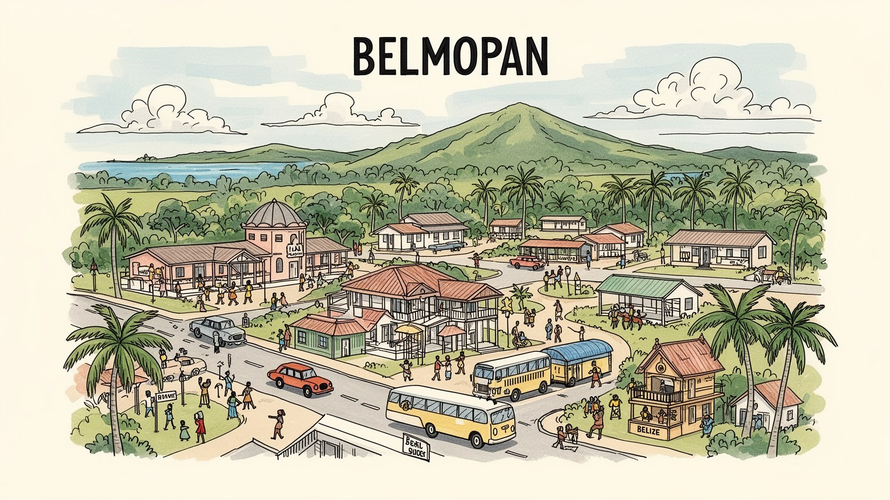
ベルモパンはカリブ海沿岸から内陸へ首都機能を移した都市です。メキシコ、グアテマラ、カリブ海、英連邦、台湾、米国との関係が政治を支えます。小国の首都として、災害安全保障と国境外交を同時に背負います。
官庁、学校、大学、商店、農産物流通、建設、交通、観光案内が雇用を作ります。大企業都市ではなく、公共部門と近郊農村の動きが日常経済を支えます。若者の仕事、賃金、移住機会が都市の成長を左右しています。
英語、クレオール、スペイン語、マヤ系言語、ガリフナ文化が国全体から流れ込みます。教会、学校行事、市場、祝祭は多民族国家の縮図です。首都は小さいですが、ベリーズの複数の記憶を静かに受け止めています。
住民は車、バス、市場、学校、官庁、住宅地区を使い分けます。旅行者は洞窟、川、マヤ遺跡、動物園、山地への拠点として滞在します。観光の華やかさより、穏やかな行政都市の日常がベルモパンの個性です。静けさが魅力。
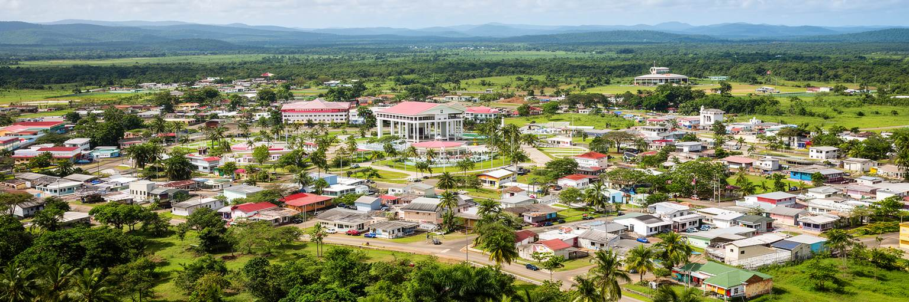
ベルモパンは、自然に成長した港町ではなく、首都機能を安全な内陸へ移すために計画された都市です。旧首都ベリーズシティは海に近く、商業、港湾、人口、文化の中心であり続けましたが、低地の海岸都市として高潮とハリケーンに弱い条件を抱えていました。ベルモパンはその弱点に対する国家的な回答として、カヨ郡の内陸部、ベリーズ川流域に近い場所へ置かれました。街の中心は高層ビルではなく、低層の官庁、広めの道路、住宅地区、学校、緑地によって構成されています。首都としては驚くほど静かで、行政の重みが巨大な都市景観として現れるわけではありません。けれども、この控えめな形こそがベルモパンの特徴です。都市は権力を見せびらかすためではなく、災害時にも国家運営を止めないために作られました。住民にとっては、首都でありながら徒歩や車で日常の用事を済ませる小都市でもあります。計画首都という性格は、街の広がり方、官庁と住宅の距離、公共施設の配置に残っています。ベルモパンを読むことは、カリブ海沿岸国家が安全、統治、生活をどのように組み直したかを読むことです。新首都の余白は、将来の成長を受け止めるためでもあり、同時に過度な拡散を避ける計画力を求めています。道路の広さや緑地の残り方にも、その慎重な発想が見えます。今も重要な視点です。
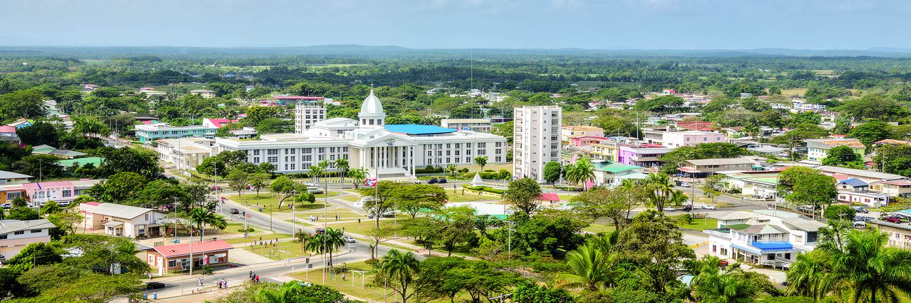
ベルモパンの中心には、国会、首相府、省庁、裁判所、大使館、行政機関が集まります。規模は大きくありませんが、ここで予算、教育、観光、農業、国境、環境、災害対応をめぐる判断が行われます。ベリーズは英連邦王国であり、議会制、総督、首相、各省庁の制度が首都に置かれています。小国では政治家、官僚、市民、新聞、学校、企業の距離が近く、政策は遠い官庁街だけのものになりません。官庁の周辺には、手続きに来る住民、通勤者、学生、出張者、露店や小商店の動きが重なります。ベルモパンの政治性は、壮麗な記念建築よりも、行政サービスが生活と直結する近さにあります。国境をめぐるグアテマラとの長い問題、カリブ共同体での協調、観光開発、気候変動、教育、治安は、すべてこの小さな首都の実務に入ります。街が静かであるほど、国家機能が日常の速度で処理されていることが見えます。ベルモパンは巨大な首都ではありませんが、ベリーズという多民族で海と森を抱える国の制度を集約する場所です。行政都市としての価値は、目立つ大きさではなく、災害時にも働き、国土全体へ手を伸ばせる配置にあります。小さな官庁街では担当者の顔が見えやすく、制度への信頼も日々の窓口対応や学校、地域の評判と結びつきます。国家が身近に見えることが、この首都の政治的な質です。
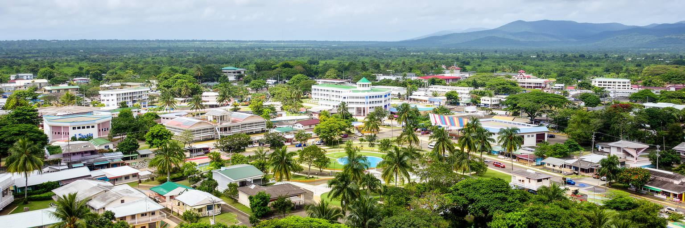
ベルモパンの誕生は、ハリケーンの記憶と切り離せません。二十世紀半ば、ベリーズシティは海岸に面した旧首都として経済と文化の中心でしたが、強い暴風雨と高潮は都市の脆弱さを露呈させました。とくにハリケーン・ハティの被害は、国家の行政中枢を海岸低地に置き続ける危険を強く印象づけました。新しい首都は、単なる都市開発ではなく、災害から国家機能を守るための移転計画でした。ベルモパンの内陸性、標高、広い区画、低層の建築は、この安全思想を反映しています。ただし、内陸に移ればすべてのリスクが消えるわけではありません。豪雨、河川の増水、道路寸断、気候変動、住宅の質、避難情報、電力と通信の確保は、今も都市運営の課題です。ベルモパンは、災害を過去の一回の出来事として記念するだけでなく、毎年の雨季とハリケーン期に備える都市です。カリブ海の小国にとって、気候リスクは環境問題であると同時に、安全保障、財政、住宅、教育、観光の問題でもあります。首都移転の物語を知ると、静かな官庁街の背後に、壊れた海岸都市から国家を守ろうとした強い判断が見えてきます。ベルモパンは、災害の経験を都市の場所そのものへ刻んだ首都です。だから防災は記念碑ではなく、道路、排水、学校の訓練、家族の備え、行政の連絡網として毎年更新される必要があります。
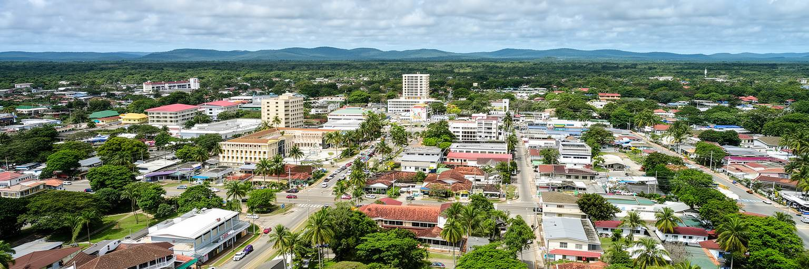
ベルモパンの人口規模は小さいですが、国全体の多様性が流れ込む首都です。ベリーズにはクレオール、メスティーソ、マヤ系の人々、ガリフナ、メノナイト、東インド系、中国系、中米からの移民など、複数の歴史と生活文化があります。公用語は英語ですが、日常ではベリーズ・クレオール、スペイン語、マヤ系言語も聞こえます。ベルモパンの学校、教会、市場、バスの待合所、官庁窓口では、こうした言語と文化が同じ都市空間を使います。首都は特定の民族文化だけを代表する場所ではなく、国土各地から来る人が制度と教育へアクセスする場所です。多民族社会は観光パンフレットの明るい言葉だけではありません。言語の壁、土地、雇用、移民資格、教育、差別、貧困、宗教の違いを調整する日常の努力を伴います。ベルモパンでは、行政都市としての中立性が、多様な住民を受け止める基盤になります。教会や学校の行事、祝祭、食品市場、家族の移動を見ていくと、ベリーズの国民意識が一つの文化に収まらず、複数の記憶を組み合わせて作られていることが分かります。小さな首都だからこそ、人々の違いは抽象的な統計ではなく、隣り合う生活として現れます。その近さが、ベルモパンの静かな国際性を作っています。多様性を支えるには、複数言語で届く行政、学校の包容力、宗教行事への配慮、移民家族への相談窓口が欠かせません。
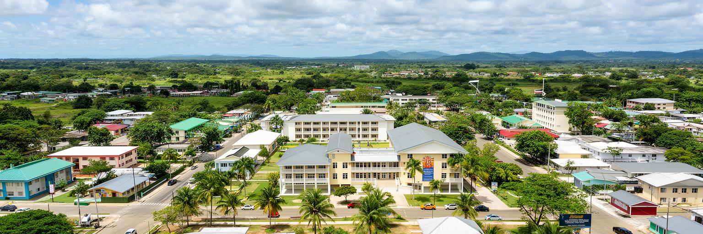
ベルモパンでは、教育と行政が都市の重要な柱です。首都機能が集まることで、官庁で働く人、手続きに訪れる人、政策に関わる専門職が集まり、学校や大学は若い人口を街へ引き寄せます。ベリーズ大学の存在は、ベルモパンを単なる官庁街ではなく、学びと人材育成の中心にもしています。学生は地方から来て、英語を基盤にしながら、スペイン語圏中米やカリブ社会との接点を持ちます。教育は、観光、環境管理、農業、教員養成、医療、行政、情報技術の人材を育てるために重要です。一方で、小さな労働市場では、学位を得た若者が希望する仕事を国内で見つけにくいこともあります。海外就職、ベリーズシティや観光地への移動、家族の支援、奨学金、公共部門の採用が進路を左右します。行政都市としてのベルモパンは、安定した雇用を生む一方、民間産業の厚みをどう広げるかという課題も持ちます。教育機関、官庁、周辺農村、観光事業が連携できれば、首都は若者が国に残る理由を増やせます。教室と官庁が近いことは、政策を学び、制度を使い、地域へ戻す回路を作ります。ベルモパンの未来は、大きな人口増よりも、若い人が学び、働き、住み続けられる質にかかっています。図書館、学生住宅、インターン、起業支援、交通の改善がそろうほど、学びは卒業後の生活へつながります。地域にも戻ります。
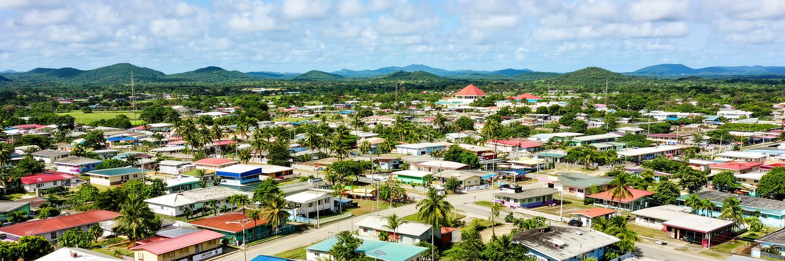
ベルモパンの暮らしは、大都市の高密度な通勤圏とは違います。住宅地は低層で、庭、道路、学校、教会、小商店、バス停が比較的ゆったり配置されています。車を使う人も多く、歩行環境や公共交通の本数は生活のしやすさを左右します。首都であるため官庁や教育機関への通勤があり、周辺の村や町から働きに来る人もいます。市場や商店では、野菜、果物、加工食品、日用品が並び、農村と都市の距離の近さを感じます。静かな環境は魅力ですが、若者にとっては娯楽、専門職、文化活動の選択肢が限られることもあります。住宅の質、家賃、土地利用、排水、道路照明、治安、学校へのアクセスは、日常の安心に直結します。ベルモパンは計画首都として作られましたが、時間がたつにつれて周辺地区の成長、移住、非公式な住宅、商業の変化も受け入れてきました。都市を読むには、官庁街だけでなく、朝の登校、夕方の買い物、雨の日の道路、庭の手入れ、教会の集まりを見る必要があります。住民にとって首都性は、国旗や議会だけでなく、生活サービスが近くにあること、そして静かに暮らせることとして経験されます。ベルモパンの日常は、国家中枢の隣に普通の家族生活が続く点にあります。小さな都市では、一つの学校や商店、診療所の質が暮らし全体へ響きやすく、公共サービスの丁寧さが安心感を左右します。
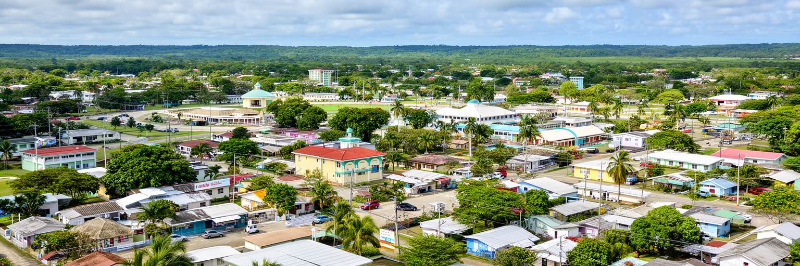
ベルモパンは、海辺のリゾート都市とは違う観光の入口です。カヨ郡には川、洞窟、石灰岩地形、熱帯林、マヤ遺跡、野生動物保護施設があり、ベルモパンはその移動拠点になります。旅行者は首都そのものの大きな名所だけでなく、周辺のアクトゥン・トゥニチル・ムクナル洞窟、ブルーホール国立公園、ベリーズ動物園、サンイグナシオ方面、マヤ山地への道を意識して滞在します。内陸観光は、海岸のサンゴ礁観光とは別のベリーズを見せます。マヤの歴史、洞窟信仰、川遊び、鳥類観察、森林保全、農村宿泊が、国の文化と自然を結びます。一方で、観光は道路、ガイド、安全管理、環境保護、地域住民の収入配分に左右されます。洞窟や森は壊れやすく、訪問者が増えれば水質、土壌、遺物、動植物への影響も大きくなります。ベルモパンの役割は、観光客を通過させるだけでなく、自然と文化を学ぶ入口を整えることです。首都としての行政機能が近いことは、保護区管理や観光政策の調整にも意味を持ちます。ベルモパンを拠点にすると、ベリーズが単なるカリブ海の島風景ではなく、中央アメリカの森、川、マヤ文明の文脈を持つ国であることが見えてきます。案内所、ガイド教育、交通情報、環境ルールが整えば、短い滞在でも地域に利益を残す旅へ近づきます。宿泊が増えれば街の店にも波及します。
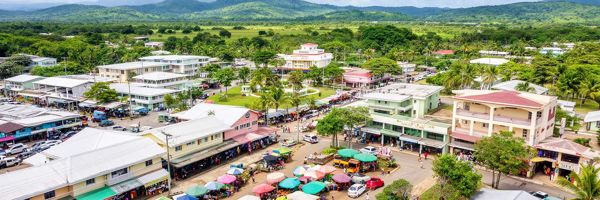
ベルモパンの経済を理解するには、官庁だけでなく市場を見る必要があります。ベリーズの内陸部には農業、畜産、小規模加工、林業、観光に関わる村や町があり、首都の市場には野菜、果物、豆、米、肉、乳製品、調味料、日用品が集まります。農産物は家計を支える食料であると同時に、近郊農村の収入でもあります。市場では英語、クレオール、スペイン語が混じり、売り手と買い手の会話から地域の季節、価格、交通の事情が見えてきます。ベリーズ経済では観光が目立ちますが、農業は雇用、輸出、食料安全保障、地方生活を支える重要な基盤です。気候変動、洪水、干ばつ、病害、輸送費、輸入食品との競争は、農家と都市消費者の両方に影響します。ベルモパンは国の中心部に位置するため、農村から行政機関、学校、商店へ向かう人の結節点になります。市場の整備、衛生、冷蔵、道路、金融アクセス、若者の農業参加は、都市政策とも関係します。小さな首都であっても、食料がどこから来るかを見れば、国土の広がりが分かります。ベルモパンの市場は、国家の制度と農村の生活が日々出会う場所です。そこでは、首都の食卓と地方の畑が短い距離で結ばれています。価格が上がる時、家計と農家の両方が影響を受けるため、市場は経済の早い警報装置にもなります。朝の取引は街の脈拍です。今日も続きます。
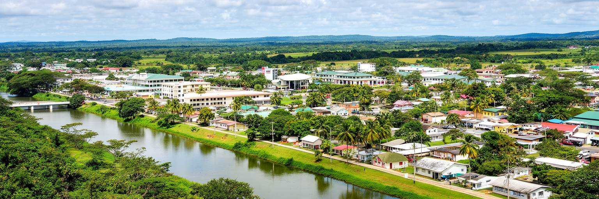
ベルモパンは内陸にあるため、海岸の高潮リスクは小さくなりますが、気候から自由になったわけではありません。熱帯モンスーンの気候では、雨季の豪雨、河川の増水、道路の冠水、湿度、蚊、暑さが生活を左右します。ベリーズ川流域に近い地形は、緑と水の豊かさを与える一方、排水、橋、道路維持、住宅地の造成に注意を求めます。乾季には暑さと水管理が問題になり、学校、職場、屋外労働、市場の環境にも影響します。気候変動が進むと、カリブ海のハリケーンだけでなく、内陸の豪雨、森林、農業、水資源も不安定になります。ベルモパンの都市計画は、首都移転時の安全思想を現代の気候適応へ更新する必要があります。日陰、街路樹、排水路、洪水情報、避難所、保健サービス、電力と通信の維持は、静かな小都市の基本的な強さになります。川や森は観光資源でもありますが、住民にとっては水、涼しさ、災害リスク、虫、道路の状態として経験されます。都市の緑を残すことは景観のためだけでなく、暑さを和らげ、雨水を受け止めるインフラでもあります。ベルモパンは、海から離れたことで得た安全を、雨季の現実に合わせて丁寧に管理していく首都です。気候への備えは大規模施設だけでなく、排水溝の清掃、木陰の維持、地域への情報伝達のような細部から始まります。日々の管理が防災です。
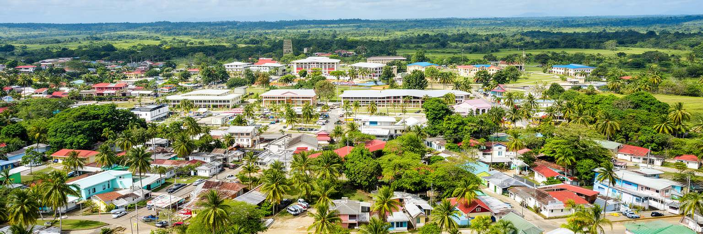
ベルモパンを世界地図の中で見ると、中央アメリカとカリブ海が重なる場所にあります。ベリーズは英語を公用語とするカリブ的な国家でありながら、地理的にはメキシコとグアテマラに接する中央アメリカの国です。内陸部にはマヤ文明の遺跡と現在も続くマヤ系コミュニティがあり、海岸にはクレオールやガリフナの文化、沖合にはサンゴ礁と島々があります。ベルモパンは海辺の文化を直接体現する都市ではありませんが、国土のほぼ中央で、これら複数の文脈を行政的に結びます。英連邦の制度、スペイン語圏中米との移動、マヤの歴史、カリブ共同体、観光市場が同じ政策空間へ入ります。この重なりは、ベリーズの魅力であると同時に、教育、言語、外交、交通、文化継承の課題でもあります。ベルモパンにいると、国が一つの大都市に吸収されるのではなく、小さな首都を通じて多方向へ開いていることが分かります。マヤ遺跡への道、海岸への道路、国境への交通、官庁の会議室は、それぞれ違う地理を首都へ接続します。ベルモパンは観光写真では控えめですが、ベリーズがカリブと中米を同時に生きる国であることを読むための静かな入口です。国の向きが複数あるため、首都の政策も一つの文化圏だけでは説明できません。その複数性が、外交、観光、学校教育、家庭の言語選択まで広がっています。
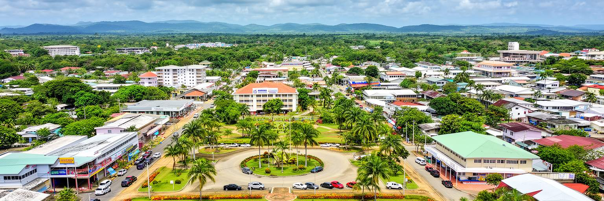
ベルモパンを読む面白さは、首都らしさが大きな都市景観ではなく、場所の選択に表れていることです。海岸の商業都市から内陸へ首都を移した判断は、災害への恐れ、国家機能の継続、国土の中央性、将来の成長を同時に考えたものでした。現在のベルモパンは、世界的な金融都市でも巨大観光地でもありません。けれども、国会、官庁、大学、住宅、市場、バス、川、森、近郊農村、マヤ遺跡への道が近くに集まり、ベリーズという国の構造を静かに見せています。旧首都ベリーズシティが港、歴史、人口、文化の重みを持ち続ける一方、ベルモパンは安全な国家運営のための装置として存在します。この二重首都的な関係を理解すると、ベリーズの都市地理が単純な中心と周辺ではないことが分かります。ベルモパンは小さいから重要でないのではなく、小さいからこそ国の制度、災害記憶、多民族性、教育、農村との関係が見えやすい都市です。旅行者は通過点として扱いがちですが、数時間歩けば、カリブ海国家が内陸に置いた静かな心臓部が見えてきます。ベルモパンの価値は、派手な景観ではなく、災害後の判断を日常の街として保ち続けている点にあります。その視点で見ると、広い道路、低い建物、市場の会話、学校帰りの道、雨季の雲までが、国家の選択を語る都市要素になります。小ささが読みやすさを生みます。